Poseidón es el dios de los mares, terremotos y los caballos, siendo el mediano de los hijos de Cronos, hermano mayor de Zeus y hermano pequeño
de Hades, Hestia, Demeter y Hera, siendo un dios con un alto culto debido a las costas de Grecia.
¿Quién era la esposa de Poseidón y cómo era su relación?
La esposa de Poseidón es Anfitrite, hija de las deidades Nereo y Doris, siendo Anfitrite una Nereida.
A diferencia de Zeus y Hera, la relación entre estos dioses era bastante buena, ya que en muchas de sus representaciones en el arte y cerámica
con muchos elementos amorosos, además de que Anfitrite no castigaba a los hijos de las amantes de Poseidón, incluso llegando a ayudar a algunos,
como fue el caso de Teseo.
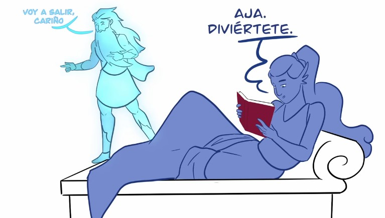
Familia de Poseidón
Poseidón, al ser uno de los hijos de Cronos, lo hacía hermano directo de la primera generación de Olímpicos, siendo así
hermano de Zeus, Hera, Demeter, Hades y Hestia.
Hestia
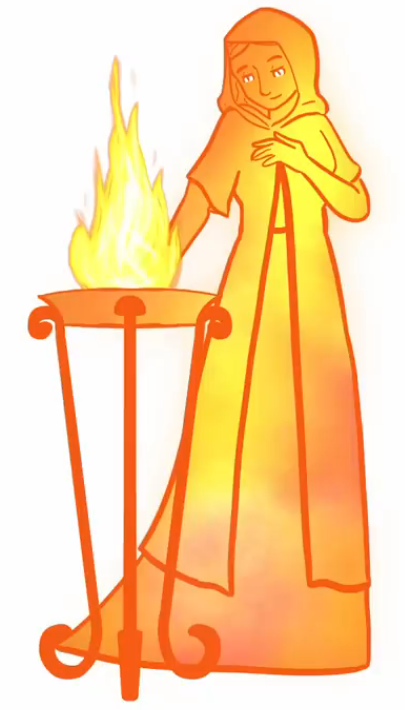
Demeter
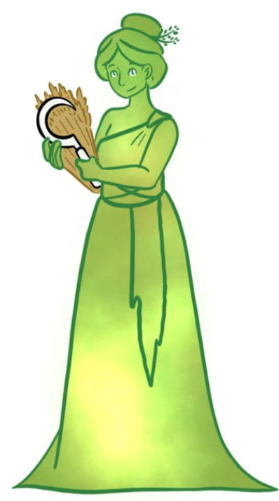
Hera
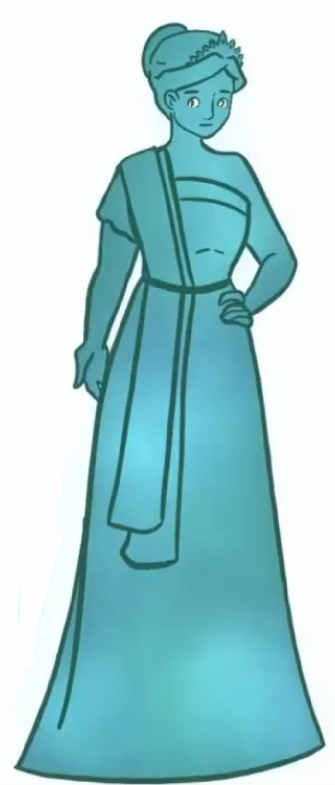
Hades
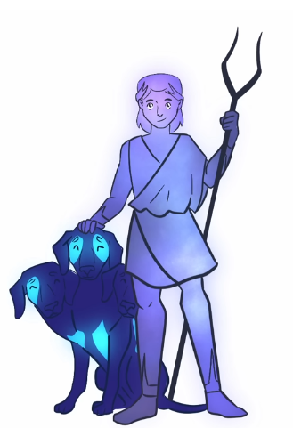
Zeus
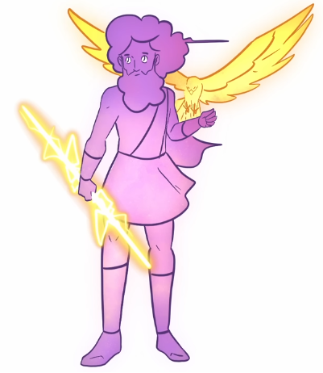
Descendencia de Poseidón
Aunque todos conozcamos a Zeus por tener muchos hijos, algo sorprendente es que su hermano mayor tuvo más hijos que el rey del Olimpo,
debido a que no solo era padre de diversos héroes como Teseo o Belerofonte, sino que también era el padre de varios monstruos.
Un ejemplo de estos monstruos es el caso de Polifemo, o de varios gigantes.
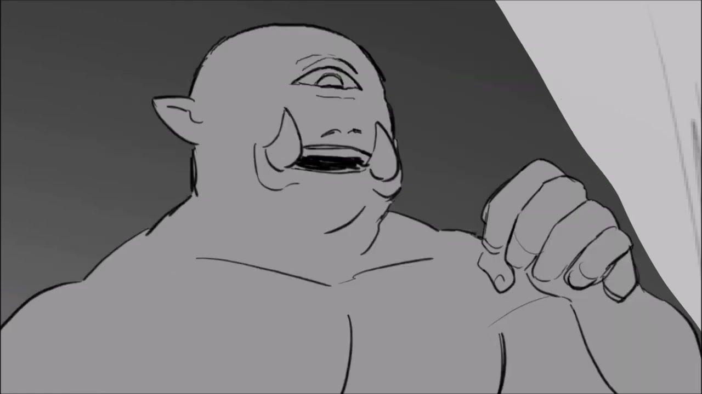
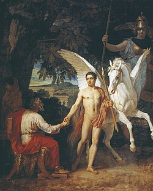
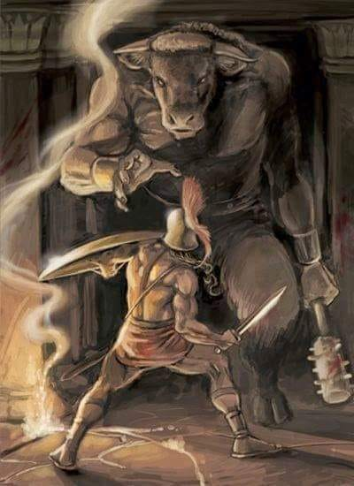
Mitos de Poseidón
Poseidón podía ser considerado una deidad que no tuvo tantas buenas interacciones con los humanos, teniendo en cuenta las fuentes de la Ilíada
y la Odisea. En la Odisea, el héroe Ulises dejó ciego a su hijo Polifemo, además de que el pueblo de los Feacios (siendo uno
de los pueblos favoritos del dios), empezó a usar el don de surcar con tranquilidad los mares con otras personas, mientras que Poseidón
quería que lo usaran solamente para ellos mismos.
Además, al igual que su hermano Zeus, participó tanto en la Titanomaquia como en la Gigantomaquia.
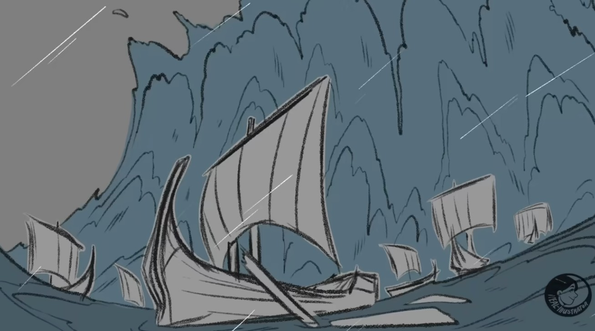
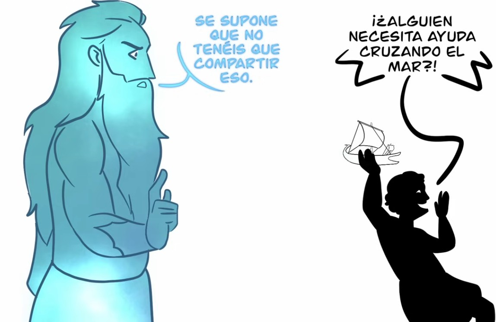
Otro mito que debemos destacar es su enfrentamiento contra la diosa Atenea con el fin de ser el patrón de la ciudad de Atenas, siendo
la diosa de la guerra y la sabiduría quien ganaría dicho enfrentamiento.
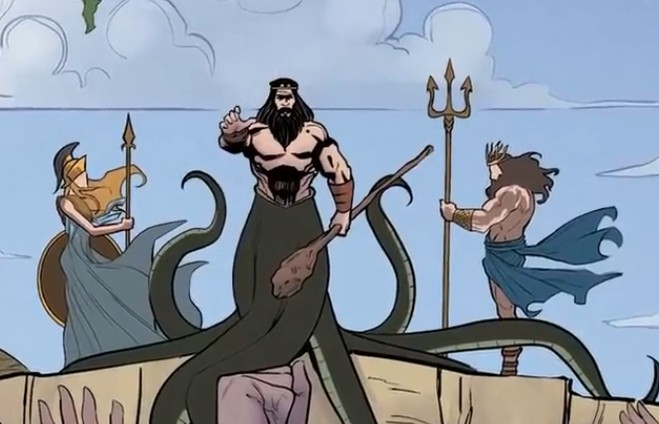
¿Existe la Atlántida? La ciudad sumergida en el océano de Poseidón
No, la Atlántida no existió, siendo estos relatos escritos por el filósofo Platón como una crítica a la Atenas en la que vivía, puesto
que estaba pasando a ser bárbara.
Bárbara para los griegos significa no poseer equilibrio; solían tomar como ejemplo a los persas, que tenían demasiadas
riquezas, construcciones demasiado grandes y demasiados terrenos.
A pesar de eso, se tiene constancia de cómo era la Atlántida en los textos de Platón.
Había un canal de tierra que cruzaba los anillos de agua fría y caliente que había creado Poseidón conectando la capital con el mar,
el templo de Poseidón estaba hecho de plata con columnas de oro y tenía una avenida con estatuas doradas de los grandes hombres y mujeres de la ciudad.
Había baños nutridos por las fuentes de agua fría y caliente que había creado Poseidón e hipódromos,
y en el centro de la Acrópolis una columna de oricalco en la que los primeros reyes
habían grabado las leyes de la isla.

 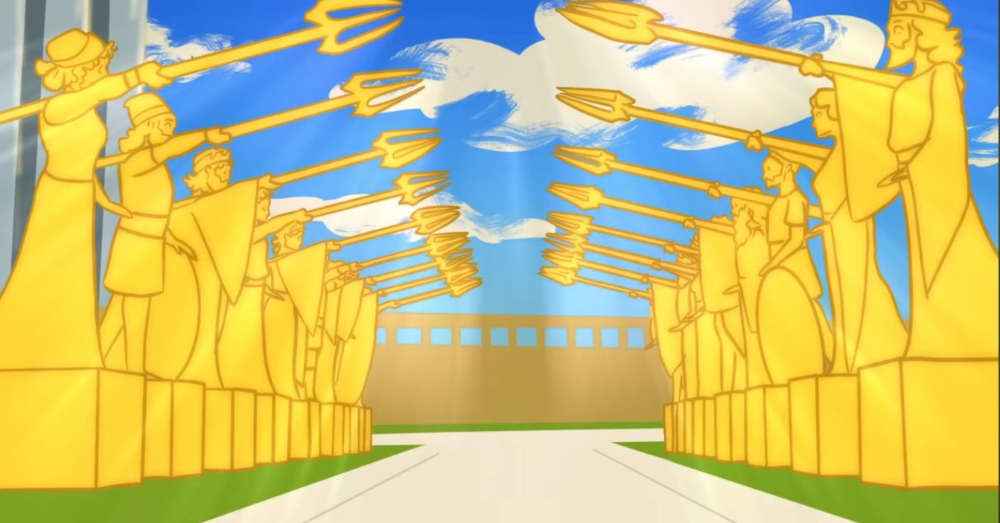
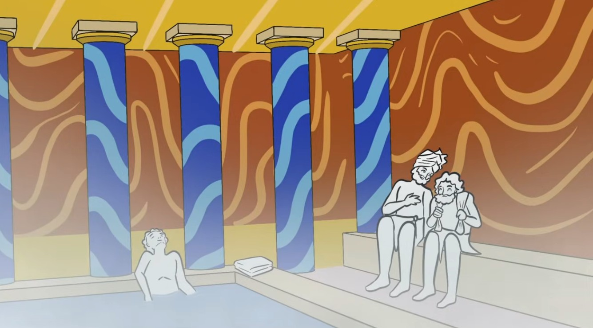
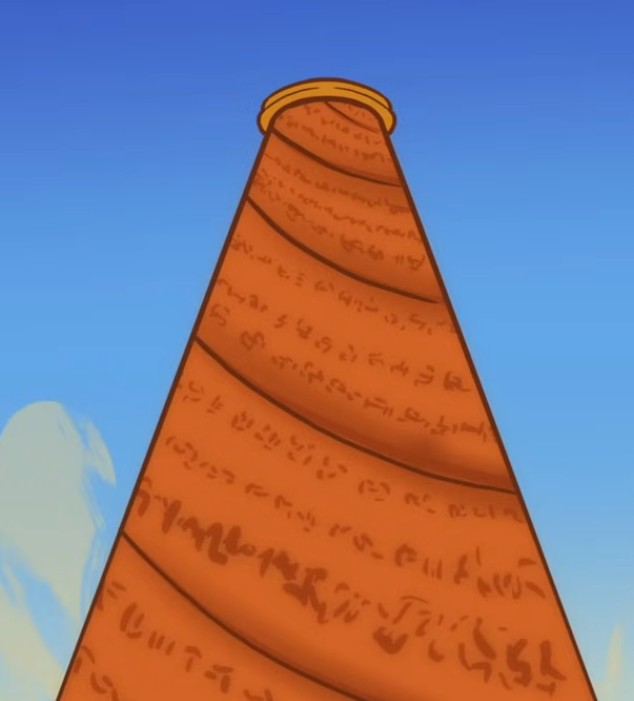
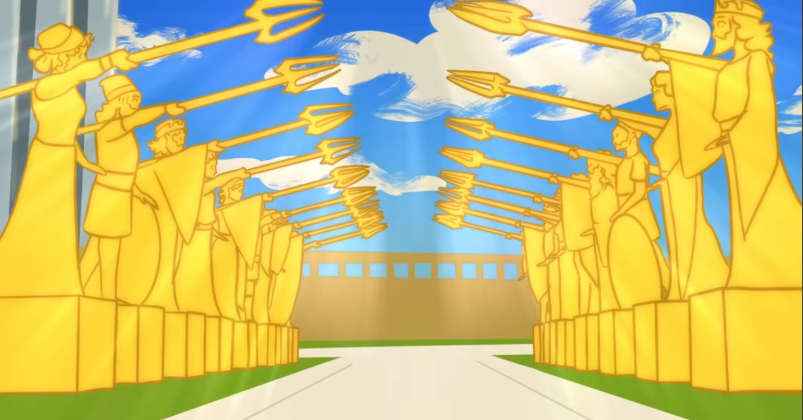
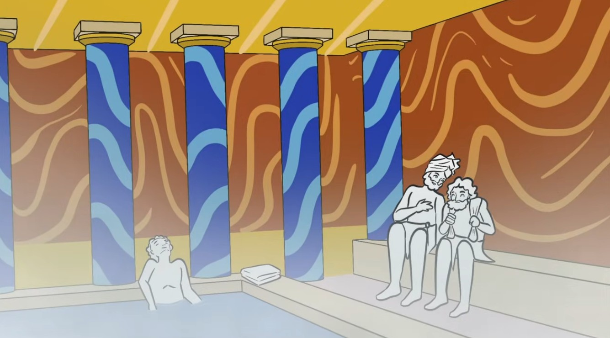
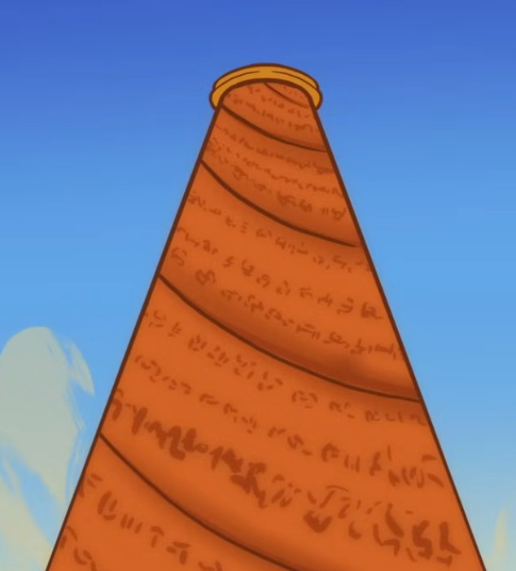